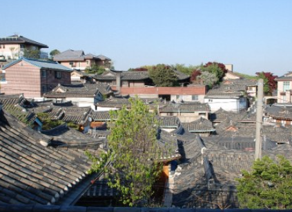
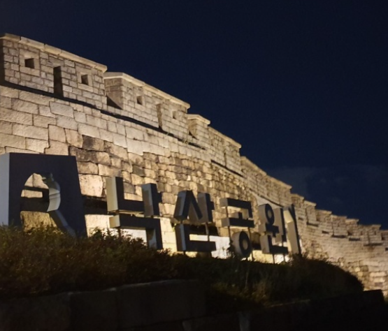
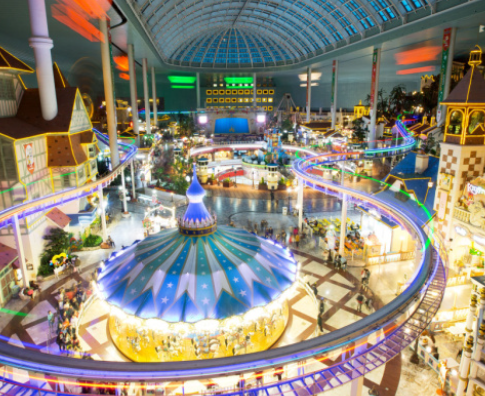

추천!

남산 타워
‘남산서울타워’는 효율적인 방송전파 송수신과 한국의 전통미를 살린 관광 전망시설의 기능을 겸비한 국내 최초의 종합전파 탑으로 방송문화와 관광산업의 미래를 위해 건립되었습니다.

북촌 한옥 마을
경복궁과 창덕궁, 금원(비원) 사이 북악산 자락에 위치한 한옥보존지구로 청계천과 종로의 윗동네라는 뜻에서 북촌이라고도 불립니다.추천!

낙삼 공원
수도 서울을 구성하는 내산, 남산, 인왕산, 낙산의 자연과 역사 문화 환경을 복원하여 서울 시민들에게 쾌적한 공원 경관을 제공하고 역사 및 문화 교육의 장을 제공하자는 취지에서 만들어졌습니다.추천!
